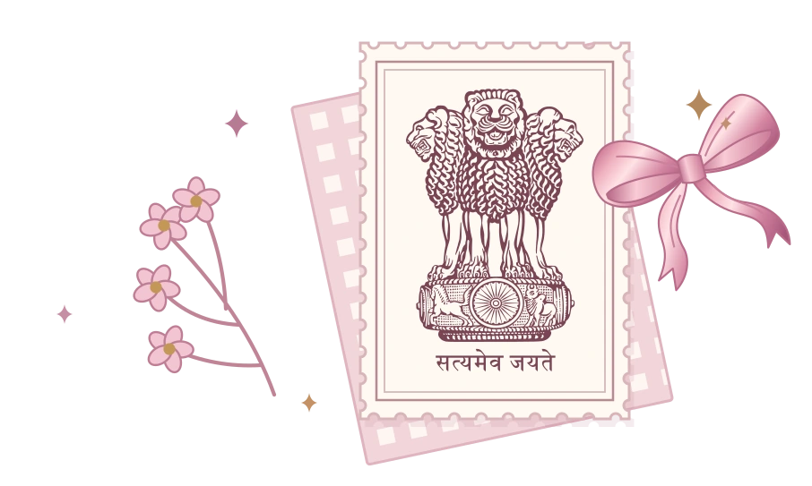

Aadya’s study desk.

Focus timer
Pomodoro25:00
More historyWhat you’ve done
More historyStudy credits
Earn 10 credits the first time you complete a syllabus topic.
Desk stickers
Pick an unlocked sticker to display beside your desk title.
Days to your target
10 May 2027Days to Prelims
23 May 2027 · timetable dateLearning days complete
Subject progress
Full syllabusPink shows topics completed. The marker shows the target through yesterday.
Study week
More historyAadya’s notebook
Field journal.
Recall practice
Your notes
More historySubject connections
Knowledge map.
Select a connected subject to explore its links.
UPSC Prelims 2027
Your full syllabus.
Aadya’s notebook
Fact book.
Saved facts
More historyStudy desk